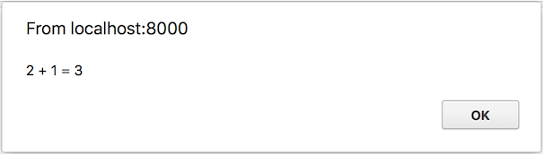

This small book describes how to use Rust and WebAssembly together.
This book is open source! Find a typo? Did we overlook something? Send us a pull request!
Background and Concepts
Web Assembly
WebAssembly is a simple machine model and executable format with an extensive specification.
Although it has currently gathered attention in the JavaScript and web communities in general, it makes no assumptions about its host environment. Thus, it makes sense to think that wasm will become an important "portable executable" format used in a variety of contexts in the near future (we will dedicate some time to take a closer look at wasm's portability features further in the book).
As of today, however, wasm is mostly related to JavaScript, which comes in many flavors (including both browsers and Node.js). Due to JS being widespread and easy to access we will focus mostly on using these platforms to run Rust-generated wasm, but other interpreters are probably going to be released in the near future.
As a programming language, WebAssembly is comprised of two formats: The binary format and the text format.
Both represent a common structure, albeit in different ways. The text format (generally called wat) uses
S-expressions, which bears some resemblance to languages like Clojure or Racket.
The binary format wasm is a lower level format, being itself the assembly code which is run by the interpreters.
For reference, here is a factorial function in wat:
(module
(func $fac (param f64) (result f64)
get_local 0
f64.const 1
f64.lt
if (result f64)
f64.const 1
else
get_local 0
get_local 0
f64.const 1
f64.sub
call $fac
f64.mul
end)
(export "fac" (func $fac)))
If you're curious about how a wasm file looks like you can use wat2wasm demo with the above code.
WebAssembly has a very simple memory model. At the moment, a wasm module has access to a single "linear memory", which is essentially a flat array of a fixed numeric type. This memory can be grown by a multiple of the page size (64K), and cannot be shrunk.
Getting Started
If you want to be able to use Rust for wasm then you need an environment to be able to do that! If
you haven't already you'll need to install rustup the official tool in order to install
and manage different versions of the Rust compiler. Follow the instructions on the site to get it
installed on your machine. Once that's installed you'll need to get the wasm32-unknown-unknown
toolchain.
$ rustup target add wasm32-unknown-unknown --toolchain nightly
Next up if you're interested in making small wasm binaries you'll want to install the wasm-gc tool to make smaller binaries and to work around bugs in the compiler toolchain for now:
$ cargo install wasm-gc
And finally if you're really interested in making small wasm binaries you'll
want to install wasm-opt from the binaryen toolkit.
"Hello World" for wasm32-unknown-unknown
A basic "hello world" can be generated with:
$ cargo +nightly new --lib hello-world
Next up change Cargo.toml to have:
[lib]
crate-type = ["cdylib"]
and edit src/lib.rs to contain:
# #![allow(unused_variables)] #fn main() { #[no_mangle] pub extern fn add_one(a: u32) -> u32 { a + 1 } #}
Now prepare the wasm binary with:
$ cargo +nightly build --target wasm32-unknown-unknown --release
# make the binary smaller by removing all unneeded exports, imports, and functions
# (working around bugs in rustc toolchain)
$ wasm-gc target/wasm32-unknown-unknown/release/hello_world.wasm -o hello_world.gc.wasm
# make the binary *even smaller* if you installed `wasm-opt`
$ wasm-opt -Os hello_world.gc.wasm -o hello_world.gc.opt.wasm
And we can test it out with:
<!DOCTYPE html>
<html>
<head>
<script>
WebAssembly.instantiateStreaming(fetch('hello_world.gc.opt.wasm'))
.then(wasm_module => {
alert(`2 + 1 = ${wasm_module.instance.exports.add_one(2)}`);
});
</script>
</head>
<body></body>
</html>
Note: To run with instantiateStreaming and compileStreaming, you need your webserver to serve .wasm file with application/wasm MIME type. The https crate can be used to serve files from localhost, and includes the application/wasm MIME type out of the box.
Alternatively, if you are running locally without any webserver.
<!DOCTYPE html>
<html>
<head>
<script>
fetch('hello_world.gc.opt.wasm')
.then(r => r.arrayBuffer())
.then(r => WebAssembly.instantiate(r))
.then(wasm_module => {
alert(`2 + 1 = ${wasm_module.instance.exports.add_one(2)}`);
});
</script>
</head>
<body></body>
</html>
If you have Python 3 installed, you can alternatively serve this file with Python's built
in web server from localhost. Python's web server cannot serve instantiateStreaming or
compileStreaming due to its lack of support for the application/wasm MIME type.
$ python3 -m http.server
Ensure that your browser supports Wasm. Two options:
-
Run this StackOverflow code snippet
-
Search for your browser version's Wasm support on caniuse.com
Open the HTML file with your browser, you should see:

Tools
Now that we've have learned how to generate our first WebAssembly "Hello World" with Rust, it is time to check out what tooling is available in the language. There are several great tools already written for WebAssembly (most of them written in C++). Wabt, for instance, is a suite of tools built to be a starting point for manipulating WebAssembly files.
However, since Rust has the potential to be used for both development and tooling for WebAssembly, several tools written in it have popped up in the ecosystem:
- wasm-gc - a small command to gc a wasm module and remove all unneeded exports, imports, functions, etc.
- wasm-nm - list the symbols within a wasm file.
- wasm-snip - replaces a wasm function body with unreachable
- rustwasm - A wasm interpreter in Rust
- wasmi - Another wasm interpreter in Rust
- parity-wasm - wasm (de)serialization in Rust
- wasmparser - A wasm binary decoder with optional validation, in Rust
- wasmtext - prints wasm modules in text format, in Rust
- wasmstandalone - standalone JIT-based wasm runner, in Rust, using Cretonne, in early development
- wasm-pack - Package up your wasm for distribution on npm
There's also plenty of space for tooling to be be built or rewritten in Rust for better synergy with the ecosystem. Some of them include:
- A wasm size profiler
- A Wabt rewrite in Rust
- Tools for the ewasm project
This page is meant to be a living document, so feel free to send us a pull request adding new incredible WebAssembly tools we might have missed or when they are released in the future!
Common Rust+wasm Workflows
This document is intended to currently collect a number of workflows related to Rust+wasm over time. Right now it's not necessarily the most organized, but that may come soon!
JavaScript Interoperation
Importing and exporting JS functions
From the Rust side
Note: this is likely to change in the near future
When using wasm within a JS host, importing and exporting functions from the Rust side is straightforward: it works exactly like C. In particular:
# #![allow(unused_variables)] #fn main() { // import a JS function called `foo` extern { fn foo(); } // export a Rust function called `bar` #[no_mangle] pub extern fn bar() { /* ... */ } #}
Because of wasm's limited value types, these functions must operate only on primitive numeric types.
From the JS side
Within JS, a wasm binary turns into an ES6 module. It must be instantiated with a linear memory and set of JS functions matching the expected imports. The details of instantiation are available on MDN.
The resulting ES6 module will contain all of functions exported from Rust, now available as JS functions.
Here is a very simple example of the whole setup in action.
Going beyond numerics
When using wasm within JS, there is a sharp split between the wasm module's memory and the JS memory:
-
Each wasm module has a linear memory (described at the top of this document), which is initialized during instantiation. JS code can freely read and write to this memory.
-
By contrast, wasm code has no direct access to JS objects.
Thus, sophisticated interop happens in two main ways:
-
Copying in or out binary data to the wasm memory. For example, this is one way to provide an owned
Stringto the Rust side. -
Setting up an explicit "heap" of JS objects which are then given "addresses". This allows wasm code to refer to JS objects indirectly (using integers), and operate on those objects by invoking imported JS functions.
Fortunately, this interop story is very amenable to treatment through a generic "bindgen"-style framework: wasm-bindgen. The framework makes it possible to write idiomatic Rust function signatures that map to idiomatic JS functions, automatically.
Tutorials
There are a wide variety of tools available in the ecosystem and we want to provide a centralized way to show you how to get using them more in depth than a basic readme.
Introduction
wasm-pack is a brand new tool designed to make packaging up binaries that include wasm (that may
or may not have JS in them) and make publishing them on npm easy to do. We can't necessarily
distribute Rust code to developers directly and expect them
to build it from scratch. npm is used to install packages for frontend work but it doesn't know how
to compile Rust! With wasm though it's not a problem. Once it's compiled it's all good to go.
However, getting it ready to be distributed, packaging it up properly for npm, and then sending it
to npm can be a bit of a hassle. wasm-pack is here to make that easier.
We'll step through creating a simple Rust library, using wasm-pack to get it ready for
distribution, sending it to npm, then using it as a package from npm to verify it works!
As with all software in the early stages this is bleeding edge! Expect some nicks and bruises! If you run into issues or a bug please file an issue over at it's repo.
Tools Setup
Rust
If you haven't already you'll need to install Rust! See the setup section for more
details. Once you've done that you'll need to install wasm-pack.
Just run the following:
$ cargo install wasm-pack
and make sure the binary is in your $PATH so you can run it.
npm
If you also have not installed npm already you'll need to do so! Follow the docs available on npm or install it through your package manager!
To confirm you've succeeded run:
$ npm --version
You should see the version number pop out in your terminal if you installed it successfully!
npm account
After you have npm installed you'll need to sign up for an account on npm if you have not already done so in order to complete the tutorial and so you can upload your package. The sign up page can be found here.
Project Initialization
Now that we've installed all of our tools and setup our npm account we can actually start coding! We'll be writing up a small crate that adds two numbers and outputs the numbers. While this will be a simple example, we're really trying to focus on how to use wasm-pack. You'll be provided links to other resources so you can make more complicated code to package and ship them to npm!
Let's get started then! First off run this command to create our project:
$ cargo new --lib wasm-add
This will create a new Rust project in a directory called wasm-add. We've also specified that
we're building a library, since we'll be calling this code from JS.
Now just:
$ cd wasm-add
You'll find everything in here ready to get started. First though we'll need to add a dependency to
our code and make a few small changes. Open up your Cargo.toml file. You should see something like
this inside:
[package]
name = "wasm-add"
version = "0.1.0"
authors = ["Michael Gattozzi <mgattozzi@gmail.com>"]
[dependencies]
This configuration file sets up everything we need to get started but we'll need a few extra fields and settings to get this to work for wasm and be ready for npm
[package]
name = "wasm-add"
version = "0.1.0"
authors = ["Michael Gattozzi <mgattozzi@gmail.com>"]
description = "Code used to demonstrate how to use wasm-pack"
license = "MIT/Apache-2.0"
repository = "https://github.com/mgattozzi/wasm-add"
[lib]
crate-type = ["cdylib"]
[dependencies]
wasm-bindgen="0.2"
First off lets look at the last three fields added to the package section description, license,
and repository npm requires this metadata and so wasm-pack won't package your code up until you
have them set. There are more fields that you can add that are more specific to crates.io that you
can find here but for the sake of this
tutorial that's all you need for that section.
You'll also notice we add a new section titled [lib]. In here we added this line:
crate-type = ["cdylib"]
Normally rust compiles the code for the library in a format meant for other Rust packages. We want
our code to work with wasm though! We specify that it's a dynamic library that's C compatible. This
sounds a bit weird but the wasm32 target will know to interpret this option and instead produce
a wasm binary properly. This is meant to get cargo to pass the right parameters to the compiler!
Alright the last thing we added was this to the [dependencies] section:
wasm-bindgen="0.2"
This is the wasm-bindgen crate. We'll be using it very shortly to make our functions work nicely
with wasm and not have to worry about a lot of nitty gritty details.
We've got our package's metadata all setup so let's actually write some code!
Rust Code
If you open up src/lib.rs you should see a file that looks like this:
# #![allow(unused_variables)] #fn main() { #[cfg(test)] mod tests { #[test] fn it_works() { assert_eq!(2 + 2, 4); } } #}
Let's quickly modify the test suite to work for what we'll be doing. It should look like this:
# #![allow(unused_variables)] #fn main() { #[test] fn it_works() { assert_eq!(add(2, 2), 4); } #}
We'll use this later to make sure our add function works!
Now we need to add this to the top of the file:
# #![allow(unused_variables)] #![feature(proc_macro, wasm_import_module, wasm_custom_section)] #fn main() { extern crate wasm_bindgen; use wasm_bindgen::prelude::*; #}
Let's step through this line by line. First up is the list of nightly features. We're enabling this for
the whole crate. What this means is that we will later tag code with an attribute and this will
allow rust to generate code that we don't have to write by hand. In our case it'll use
wasm-bindgen. It should be noted that #![feature(...)] implies using the nightly
compiler. This gated feature will hopefully be stabilized and landed soon so that you won't need it!
wasm-bindgen knows how to make code that works well with wasm so we don't have to
worry about it too much and just write rust code for the most part. If you want to know the full
extent of it's capabilities check out the README on it's repo which can be found
here. For our purposes we need to know that if we
want functions to work with wasm easily we'll need it.
The next line says we're importing the wasm-bindgen crate and the line after that imports the
prelude from wasm-bindgen. The extern crate call lets the compiler know what crates to link in
and the prelude contains all the types and functions that wasm-bindgen needs to work properly!
Cool let's import the alert function from JS so that we can call it in our Rust code!
# #![allow(unused_variables)] #fn main() { #[wasm_bindgen] extern { fn alert(s: &str); } #}
First off we use the #[wasm_bindgen] attribute. This attribute will handle all the code with
importing the functions we declare below it. The next is an extern block. This lets us declare
what JS functions we want to import. We just need to declare the function signature for it. In this
case we're importing the function alert which takes an &str as input!
Alright so we have our external bit of code and we have everything imported so let's write the
actual add function, as well as an add_alert function that will use add in itself but also
call alert to print out the results before returning the value.
# #![allow(unused_variables)] #fn main() { #[wasm_bindgen] pub fn add(a: i32, b: i32) -> i32 { a + b } #[wasm_bindgen] pub fn alert_add(a: i32, b: i32) -> i32 { let c = add(a, b); alert(&format!("Hello from Rust! {} + {} = {}", a, b, c)); c } #}
You'll notice that both functions have this #[no_mangle] attribute. When we export functions in
Rust to other languages we need to make sure the name doesn't get changed when compiled so that if
we want to call add that it will be called add and not a random compiler generated name. Now
we've also said that these are both pub extern fn by putting the extern keyword in there we
have marked this as a function that can be called by another language outside of Rust. You can also
call these functions inside of Rust as we can see inside alert_add.
The rest is fairly straightforward if you're familiar with Rust, but if you're not we'll walk
through it. Both functions take a value a and a value b. We have said that both are 32 bit
integers (i32). We then say both will return an i32. The last line in a function returns the value
if there is no semicolon. So in the add function the value of a + b gets calculated and it's
value is returned! In the case of alert_add we store the value of the add function we just made
into the variable c. We then call alert saying what the add operation looked like and what the
value was! We then return what was inside c. Neat!
This is all the Rust code we need to write. Your lib.rs file should look like this by now:
# #![allow(unused_variables)] #![feature(proc_macro, wasm_import_module, wasm_custom_section)] #fn main() { extern crate wasm_bindgen; use wasm_bindgen::prelude::*; #[wasm_bindgen] extern { fn alert(s: &str); } #[wasm_bindgen] pub fn add(a: i32, b: i32) -> i32 { a + b } #[wasm_bindgen] pub fn alert_add(a: i32, b: i32) -> i32 { let c = add(a, b); alert(&format!("Hello from Rust! {} + {} = {}", a, b, c)); c } #[test] fn it_works() { assert_eq!(add(2, 2), 4); } #}
Just to make sure that add works we'll run the test we wrote earlier:
$ cargo test
You should get output that looks sort of like this:
Compiling wasm-add v0.1.1 (file:///home/michael/Code/wasm-add)
Finished dev [unoptimized + debuginfo] target(s) in 0.54 secs
Running target/debug/deps/wasm_add-5d5676e23e39dbea
running 1 test
test it_works ... ok
test result: ok. 1 passed; 0 failed; 0 ignored; 0 measured; 0 filtered out
Yay it all works! Notice we didn't add a test for alert_add. This is because Rust won't know what
alert is unless the wasm code is running in the browser! Don't worry though. Once we package this
code up and upload it to npm we'll then test out that function to make sure everything works like we
expect it too!
You can find all of the above code here.
Package Code for npm
We've made our code so now we need to package it all up. In your project directory run the following command:
$ wasm-pack init --scope MYSCOPE
where MYSCOPE is your name or something. Normally you could just type wasm-pack init but since
other people are doing this tutorial as well we don't want conflicts with the wasm-add package
name! This command when run does a few things:
- It'll compile your code to wasm if you haven't already
- It'll generate a pkg folder with the wasm file, a JS wrapper file around the wasm, your README,
and a
package.jsonfile.
This is everything you need to upload your code to npm! Let's do just that!
First off you'll need to login to npm with the account you made earlier if you didn't already have one:
$ npm login
Next you'll need to go into the pkg directory and actually upload the package:
$ cd pkg
$ npm publish --access=public
Now normally if things are not scoped you can just do npm publish but if you give it a scope
you'll need to tell npm that this is actually public so it can publish it. We need to do that here
since we gave our packages a scope to avoid conflicting with each other! Next up is actually running
the code and verifying we got it from npm and how we can use that code.
Run The Code From npm
Alright let's make a new small directory to test that we can now run this code and pull it from npm.
$ mkdir test
$ cd test
Now we need to create a package.json file that looks like this:
{
"scripts": {
"serve": "webpack-dev-server"
},
"dependencies": {
"@MYSCOPE/wasm-add": "^0.1.0"
},
"devDependencies": {
"webpack": "^4.0.1",
"webpack-cli": "^2.0.10",
"webpack-dev-server": "^3.1.0"
}
}
where MYSCOPE is whatever you used before. You can expand this to be a more complete file but
we're really just trying to verify that this works!
Next up we'll need to create a small webpack configuration so that we can use the
webpack-dev-server to serve the wasm file properly. It should be noted that webpack isn't
a requirement. It's just what was chosen for this tutorial. You just need something to server the
code! Here's what it should look like:
const path = require('path');
module.exports = {
entry: "./index.js",
output: {
path: path.resolve(__dirname, "dist"),
filename: "index.js",
},
mode: "development"
};
This tells webpack that if it's going to start things up use index.js. Before we do that though
we'll need to setup a small html file. Create a new file called index.html and put this inside it:
<html>
<head>
<meta content="text/html;charset=utf-8" http-equiv="Content-Type"/>
</head>
<body>
<script src='./index.js'></script>
</body>
</html>
We're almost set. Now we need to setup our JS file so that we can run some wasm code!
Make a file called index.js and put this inside of it:
const js = import("./node_modules/@MYSCOPE/wasm-add/wasm_add.js");
js.then(js => {
js.alert_add(3,2);
});
Since web pack can't load wasm synchronously yet
we are using the import statement above followed
by the promise in order to load it properly. This is what lets us then call alert_add. We're
importing from the node_module folder we haven't gotten yet so let's import all of our
dependencies finally and run the example!
$ npm install
$ npm run serve
Then in a web browser navigate to http://localhost:8080 you should see something like this:

If you did congrats you've successfully uploaded your first bit of wasm code to npm and used it properly!
Next Steps
This was an introduction to wasm-pack but also using wasm code from npm. From here you could actually improve on the project setup, expand out what your wasm code can actually do, or expand out how you would use the package you've created. The whole wasm space is completely open so there's no limit to what you can and can't do really! Go out there and try some cool new things. Happy hacking!